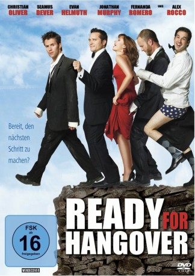

#10163 Ready for Hangover
Alternativ: Ready or Not (Englischer Titel)
 
 IMDB-Wertung: 4.9 / 10
IMDB-Wertung: 4.9 / 10  Metascore: 0
Metascore: 0 
Vier Collegefreunde haben keine Ahnung, dass die Nacht der Junggesellenfeier ihres Kumpels das größte Abenteuer ihres Lebens einleitet. Was als feuchtfröhlicher Spaß in Las Vegas beginnt, setzt sich mit einem Fallschirmsprung über Mexiko fort. Die vier Jungs landen im Garten eines Drogenbarons und dann im Gefängnis. Sie kommen auf Kaution frei und fliehen mit der Tochter des Drogenbarons. Als die einen depressiven Stierkämpfer treffen, müssen sie einen Weg finden, wie sie ohne Geld, Ausweis oder Sprachkenntnisse die Grenze in Richtung Heimat überqueren können. Der Tag hat erst begonnen, die Hochzeit steht vor der Tür und das Chaos nimmt kein Ende.
Jahr: 2009
Dauer: 88 Minuten
FSK: 16
Land: USA Studio: Monarch Home VideoTonspuren: DTS - ,
Untertitel:
Auflösung: 1080p (1920x1080) Größe: 6717 MB
Genre: Komödie
Regisseur: Sean Doyle
Drehbuch: Sean Doyle, Travis Kurtz, Christian Oliver
Soundtrack: Erik Godal
Darsteller:
- Christian Oliver als Chris
- Seamus Dever als Marc
- Evan Helmuth als Lawrence
- Jonathan Murphy als Dean
 Alex Rocco als Don Julio
Alex Rocco als Don Julio- Fernanda Romero als Puri
 Steve Railsback als Pilot
Steve Railsback als Pilot- Odessa Rae als Coco
 Marco Rodríguez als Pedro
Marco Rodríguez als Pedro- Jordi Vilasuso als El Solo
 Ray Santiago als Nacho
Ray Santiago als Nacho- Ange Billman als Rebecca
- Andrea Bogart als Kelly
- Juliana Dever als Maid of Honor
- Leslie Garza als Don Julio's Girl
- Janet Lopez als Dancer #2
- Jorge Sanchez als Don Julio's Henchman
- Cindy Vela als Don Julio's Girl
- Shannon Wilcox als Don Julio's Lady
- Jessika Fuhrmaneck als Raven
- Leah Elias als Gretchen
- Anthony Vela als Peyote Man
- Mario Reynoso als Thing Driver
- Pilar G. Arias als Don Julio's Girl
- Laura Castle als Waitress
- Anthony M. Cody als Sancho
- Diana Marie Foster als Madam
- Juan Carlos González als Priest
- Angelina Guzman als Dancer #1
- Antonio Hernandez als Don Julio's Henchman
- Nikole Hollenitsch als Cheerleader #2
- Geoff Kirsch als Priest
- Amanda Lynne als Don Julio's Girl
- Dez Martin als Wrestler
- Roberto Martinez als Don Julio's Henchman
- Summer Morgan als Cheerleader #3
- Joe Orrego als Bartender
- Leopoldo Pacheco als Don Julio's Henchman
- Jesus Quintanilla als Don Julio's Henchman
- Bárbara Riquelme als Cousin's WIfe
- Marissa Serrano als Don Julio's Girl
- Antonio Cruz als Cantina Patron (uncredited)
- Antonio Perez als Cantina Patron (uncredited)
Datei: X:\2009(N-Z)\Ready for Hangover (2009, FSK16, 1920x1080).mkv seit 13.12.2018
Festplatte: HD 2009(G-Z)-2010(A-F)
 Es gibt insgesamt 99 Filme in der Gruppe '2009(N-Z)'
Es gibt insgesamt 99 Filme in der Gruppe '2009(N-Z)'